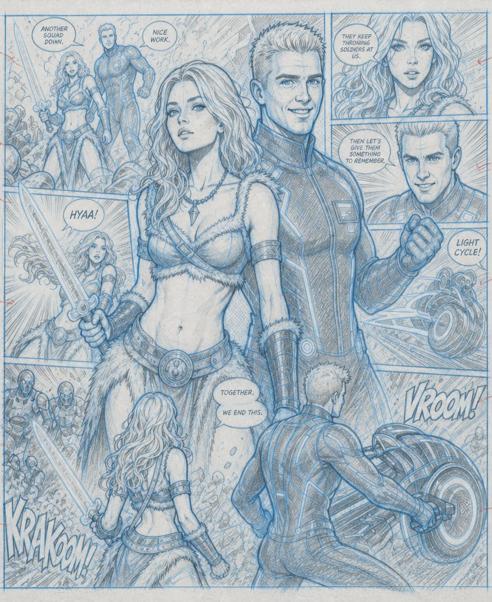

Portfolio Dream
Find
Future
Vistas.
A collection of sites, pages, and possibilities — each one a window opened toward what comes next. This is the work of someone who believes the horizon is always worth the walk.
View selected work →A lot of sites
and pages.
-
01
→
Horizon Index
A curated directory of emergent online spaces — mapping where the digital frontier is actively being written.
-
02
→
Vista Pages
A series of long-form editorial pages exploring what next-generation web experiences feel like from the inside.
-
03
→
The Lot
An ongoing archive of every site, landing page, and micro-experiment built in pursuit of better futures.
